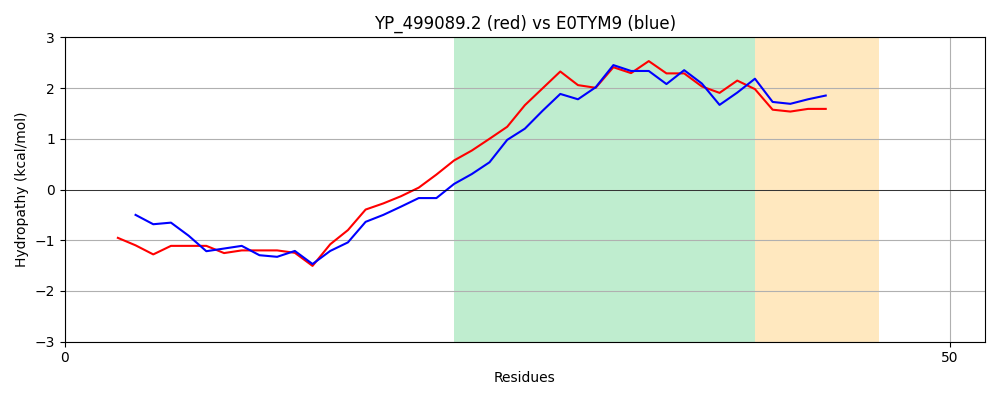

Hit Accession: E0TYM9
Hit TCID: 3.A.5.2.1
Hit Description: gnl|BL_ORD_ID|3563 gnl|TC-DB|E0TYM9|3.A.5.2.1 Protein translocase subunit SecE OS=Bacillus subtilis subsp. spizizenii (strain ATCC 23059 / NRRL B-14472 / W23) OX=655816 GN=secE PE=3 SV=1
Mach Len: 52
e:0.000000
Query TMS Count : 1
Hit TMS Count: 1
TMS-Overlap Score: 0.900000
Predicted Substrates:CHEBI:8526;protein polypeptide chain
BLAST Alignment:
| Protein Hydropathy Plots: | |
|---|---|
Pairwise Alignment-Hydropathy Plot: | |
|  | |